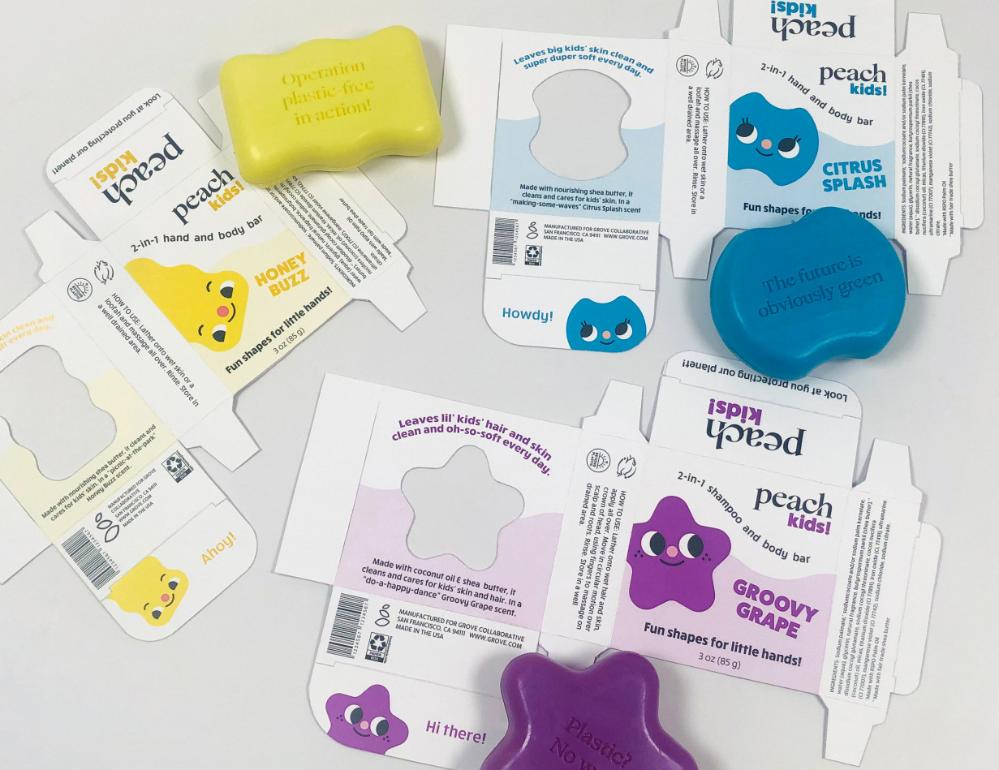
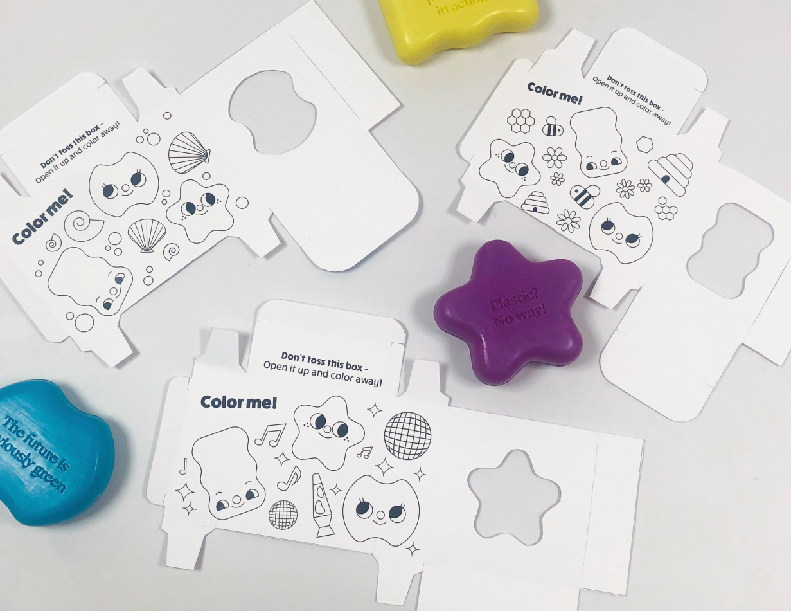
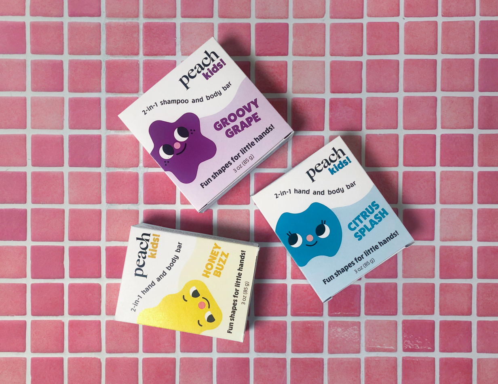
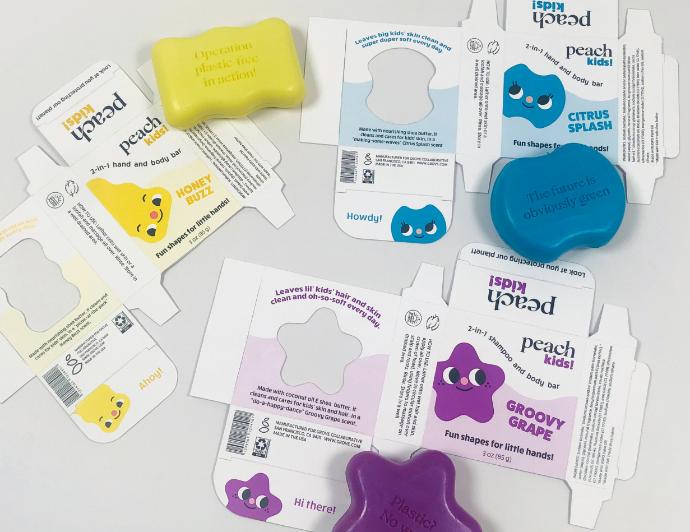
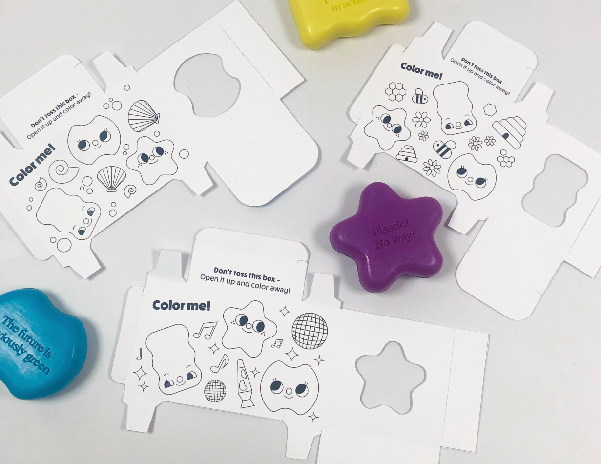
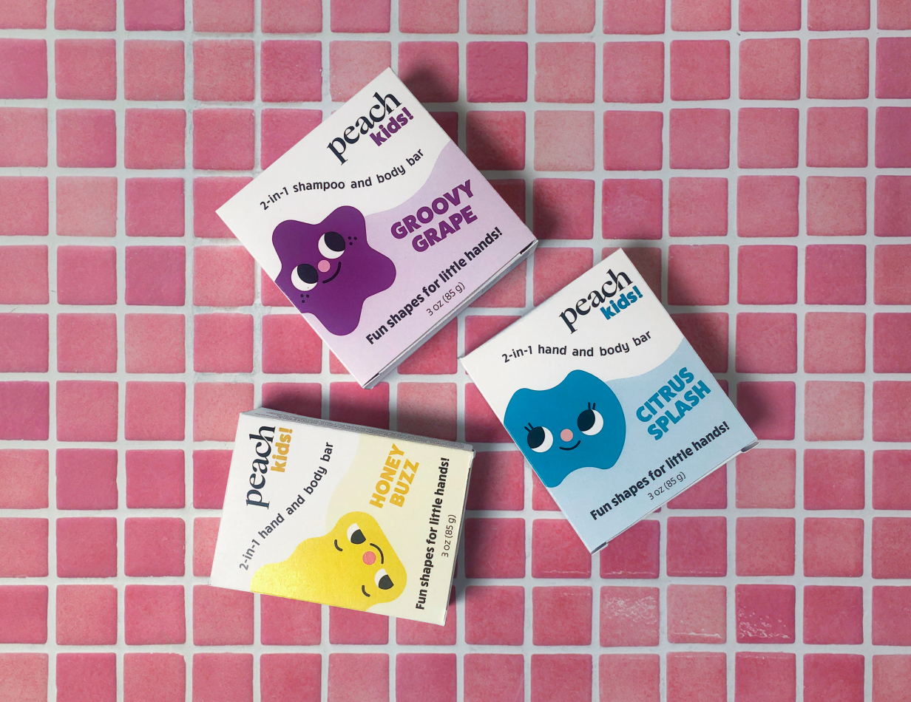

Peach Kids
In this packaging concept, I worked to create a fun and environmentally friendly package that showcases the shape of the soap inside. These soaps are designed in various shapes to fit comfortably in kids' small hands, and I aimed to highlight this aspect through the packaging.
Problem and Solution
The original packaging for this soap was a paper box with a lot of writing and a couple of abstract shapes reflecting the color and design of the soap. I really wanted the packaging to be appealing to kids, so I created some fun characters to be seen throughout the design, which could also be used in advertising later. These characters can also be seen in the coloring pages inside the box, which allow kids to reuse the packaging even after it's done, furthering Peach's sustainability initiative. The cutouts on the back of the box allow customers to see the soap itself, and allows them to smell the fun scents!
My Process
I started with brand research and moodboards. After this, I moved on to sketches, going from paper to digital. After multiple rounds of peer review and critique, I started on the final packaging design and dielines. After some print trials, allowing me to adjust the packaging for the best fit, I was able to construct the final boxes. These boxes can be put together without any glue or tape, allowing the paper to be fully recyclable.
 




